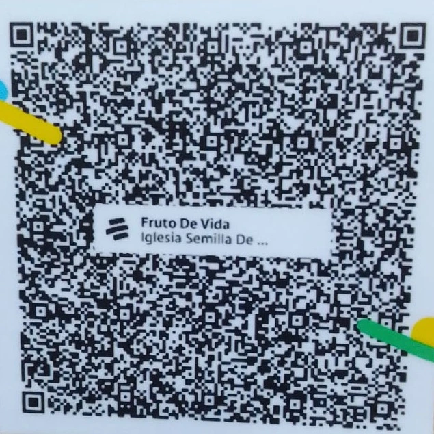

Todos nuestros eventos son GRATIS
Sacrificio, Fe, Santidad, Comunión
Nuestro ADN
Amor, Servicio, Fraternidad
Valores que nos rigen
Próximos Eventos

Congreso de mujeres
Fortalecimiento espiritual y crecimiento en unidad.

Confraternidad juvenil
Encuentro dinámico lleno de energía y propósito.

Congreso de caballeros
Formación de liderazgo con carácter.

Congreso juvenil
Adoración e inspiración.

Encuentro con Dios
Transformación real.
Apoya con tus Donaciónes
Tu generosidad transforma vidas. 👇

Apoyo a la comunidad
Tus donaciónes permiten ayudar a familias y extender nuestra labor social.

Impulso a jóvenes
Formamos líderes con propósito y valores sólidos.

Proyectos
Aportas al crecimiento y expansión de la obra.
Gracias por tu generosidad 2 Corintios 9:7

Escanea para donar
Principio de Guerra Espiritual
Hay batallas que no se ganan con fuerza humana, sino con autoridad espiritual. La oración es nuestra herramienta para vencer, restaurar y avanzar.
Cuando oras con propósito, activas el poder de Dios en cada área de tu vida. No estás solo en lo que enfrentas. Aquí creemos en la intercesión, en la fe activa y en resultados reales.
Permítenos unirnos contigo en oración. Juntos podemos levantar un clamor que transforme situaciones, rompa obstáculos y traiga dirección clara.
Visítanos en Casa Apostólica y Profética
Te esperamos para vivir una experiencia real con Dios.
Ciudad: Cartagena, Colombia
Tabocap
Asesor Virtual Cruzada Cristiana